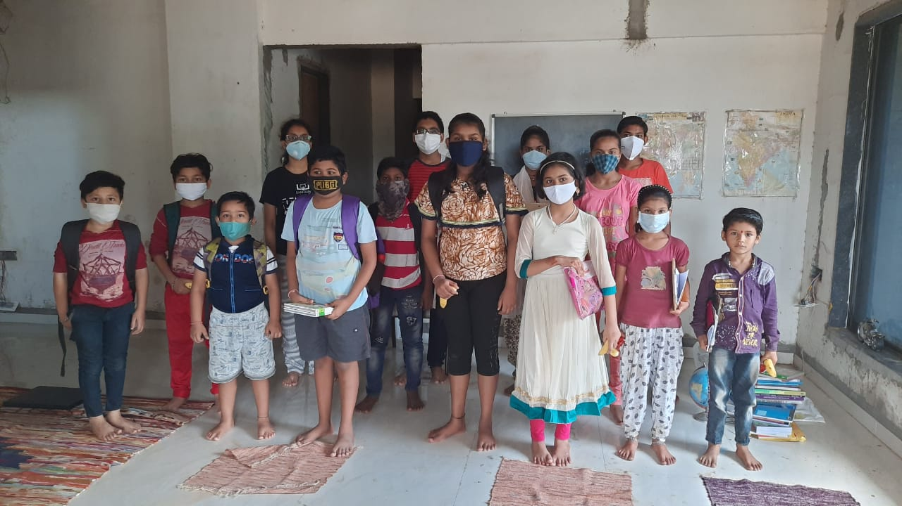
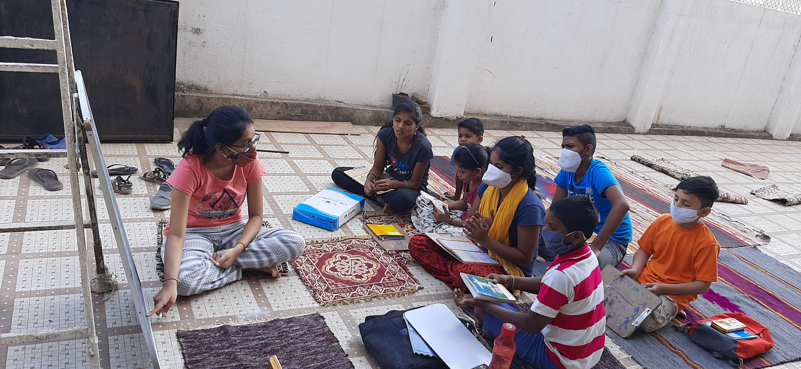
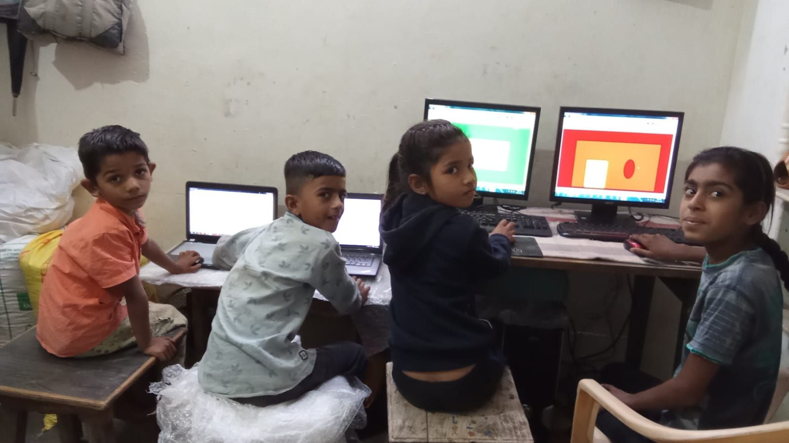

Chapter growth
New volunteer-led chapters are strengthening local continuity so students receive regular support.
Learning can feel human again.
Fun Learning Youth (FLY) is a youth-led organization using cohort-based mentorship to reduce dropout among underprivileged middle-school students in India.
We are working to reverse pandemic-era learning loss, improve retention, and help students build environments where they can actually learn - not just attend.


Middle school is a fragile stage - especially when families face pressure from lost learning time, work, and household stress. FLY volunteers show up consistently: as mentors, tutors, and caring adults who believe students belong in school.
For partnership, press, or volunteering, email us.
These numbers come from our community's work together - not a marketing claim.
We are building steadily and publicly. Here are a few updates we are proud of.
New volunteer-led chapters are strengthening local continuity so students receive regular support.
More volunteers are staying active longer, giving students stable relationships and trusted guidance.
Parent and community confidence is growing as students show stronger attendance and engagement.
We keep this simple on purpose: clarity builds trust. The work is relational before it is "programmatic."

We are volunteers who mentor underprivileged students in our localities - 14 such clubs so far. Our goal is to help students rejoin school or increase attendance by making learning feel possible again.

We use games, storytelling, and steady mentorship - meeting students where they are, without talking down to them. We try to be at least one adult who cares about their education, health, and dignity.

After the pandemic, many young teenagers began working and now see school as an expense rather than a path upward. Some lack basic literacy and numeracy foundations. Girls face earlier marriage pressure; boys can be pushed into risky work. Retention is not a statistic first - it is a life trajectory.
FLY grew street by street, then city by city. If your community is not listed yet, that is not a boundary - it is an invitation to start a conversation.
We are open to collaborations with institutions and community organizations. If you want to volunteer, start a chapter, or support learning materials, send a note - we will read it.
Email: withfunlearningyouth@gmail.com
Students first, always. Let's build this together.